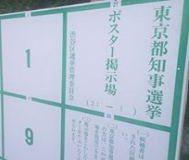

使い方この説明を別ウインドウで開く
ポスターを貼り付けたい場所を確認します
「地域を選択」からポスターを貼り付けたい地域を選択します。（ex 中野区）

ポスターの場所がピンで表示されます。

貼り付けの終わっていない場所は赤色で「未」と表示。
終わっている箇所は水色で「終」と表示されます。
ピンをタップすると、掲示板の詳細な住所が表示されます。

貼り付けが終わったら
終わった場所のピンをタップして、吹き出しの下に表示されるテキストをコピーします

掲示板の情報部分を撮る
市区町村名と、固有の掲示板番号が書いてあります。その枠全体を撮ってください。（番号は枠の下の方にあることも多いので「撮ったけど切れてた」に注意。）

Twitterで送信
「@posterdone」に先ほどコピーしたテキストと、掲示板の写真付きでリプライを送って下さい。
（注意）貼り付け報告用アカウント「@posterdone」を事前にフォローしてください。
上記を繰り返して、どんどんポスターを貼って行って下さい！
便利な使い方 近くの掲示板を表示
「近くの掲示板を表示」のボタンを押すと、今いる場所付近のポスターの場所がピンで表示されます。今居る場所の掲示板を探す時に便利です。GPSをオンにして下さい。
機能一覧
「地域を選択」
表示したい掲示板のある区を選択すると、その区の掲示板の位置が表示されます。
表示出来るのは1つの区だけです。
ステータス
「未貼付の物」と「貼付完了」の掲示板の表示を切り替えます
通常は「未貼付の物」でOKです。
近くの掲示板を表示
今いる場所付近のポスターの場所がピンで表示されます。今居る場所の掲示板を探す時に便利です。GPSをオンにして下さい。
MarkList
地図上に表示された、掲示板の位置をタップすると、住所等が書かれた吹き出しが表示されます。
吹き出し下の「Mark」ボタンをタップすると、その掲示板が緑色でマークされます。
マークした掲示板が「MarkList」で一覧表示されます。